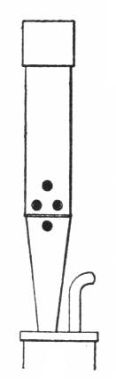
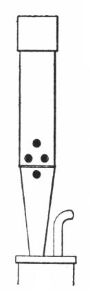

|
Sordun German | ||
|
Sordunenregal German Sordunregal German |
Sertin (unknown) Sourdin French |
These names have been used for a 16' or 8' reed stop of the Regal class, having short, covered resonators and a soft or muffled tone. According to Grove, it was popular in the 17th century in north central Germany. Wedgwood considers it equivalent to the Ranket. This reed often appears in very small practice organs as the only 16' pedal stop.
The name Sertin is mentioned only by Maclean, who cites an example �at the University Church, Leipzig (Scheibe, 1715) ... a kind of Muted Trumpet�, and by Williams, who cites an 8' example �at the Paulinerkirche, Leipzig, 1715�. Both sources list it as a synonym for Sordun.
There is also a flute stop that has gone by the name Sordun.
The photographs below (courtesy of Brent Johnson) are of a Wicks 32' pedal Sordun. Notice the tuning flap at the bottom of each resonator. The pipe with the plexiglas boot is low C; the tape measure accompanies low D#. The drawing is from Audsley.
Osiris contains twelve examples of Sordun, three at 32', seven at 16', one at 8', and one at 4'; all but one are known to be reeds, and that one is probably a reed also. All date from the 20th century, and all but two appear in pedal divisions. The only known examples of Sertin are those mentioned above, and no examples of Sordunregal or Sourdin are known. Contributions welcome.
Sordun 8', Pedal; St. Marien, Rostock, Germany; Sauer 1938.
Sordun 16', Pedal; Alfred Hertz Memorial Hall of Music, University of California, Berkeley, California, USA; Holtkamp 1958.
Sordun 32', Pedal; Abbey, Marienstatt, Germany; Rieger 1969.
|
Original website compiled by Edward L. Stauff. For educational use only. Sordunregal.html - Last updated 21 February 2006. |
Home Full Index |
{kind=link}
{kind=link}